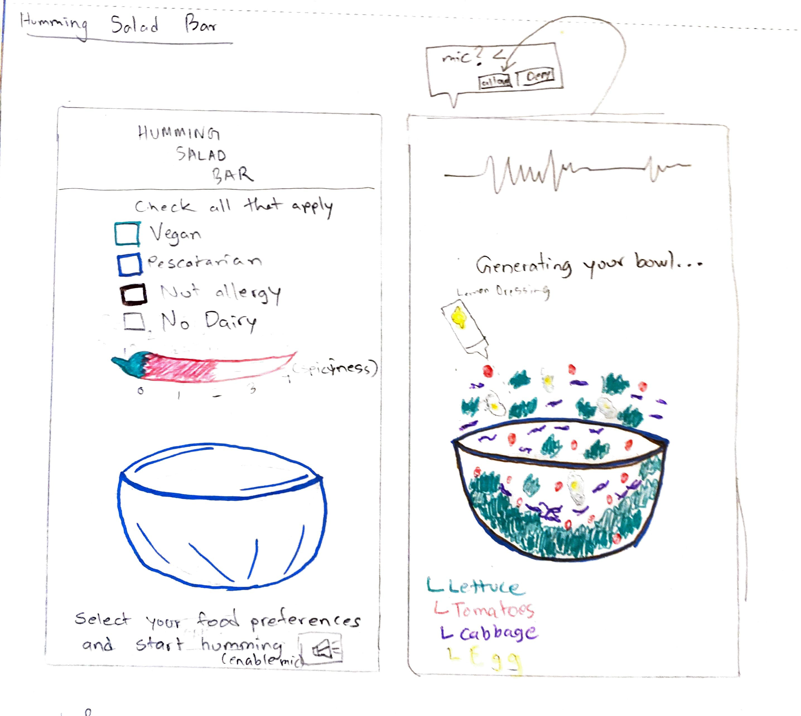
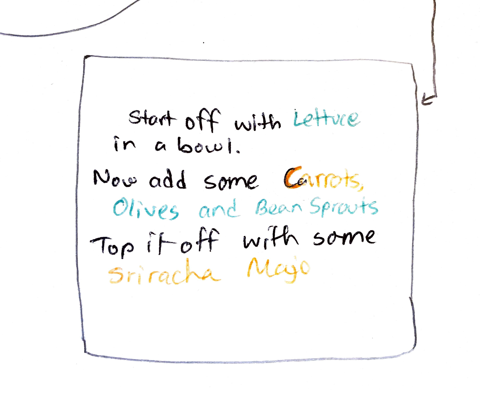
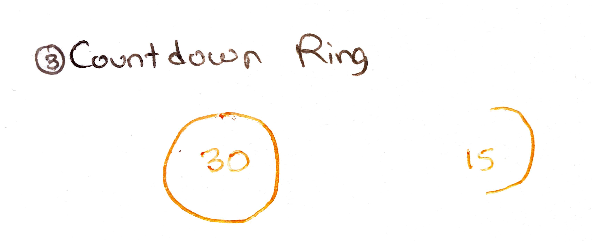
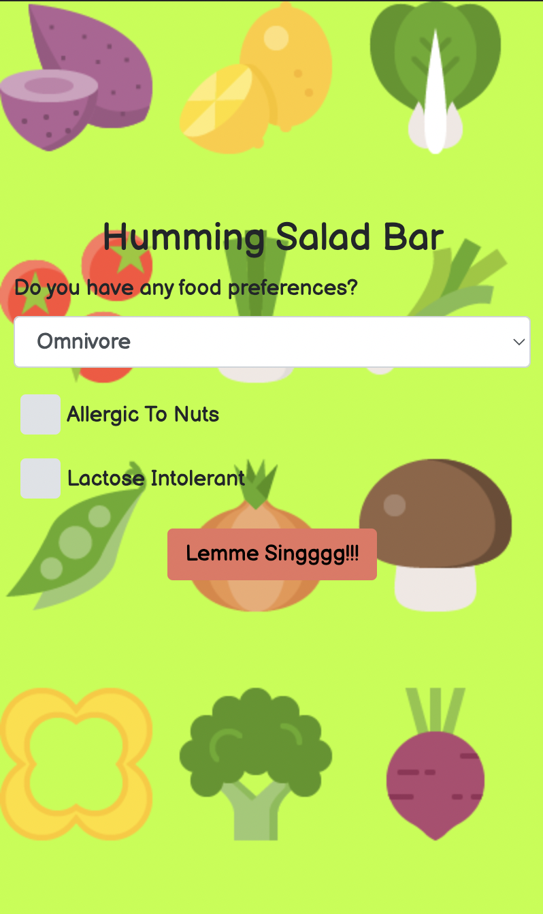
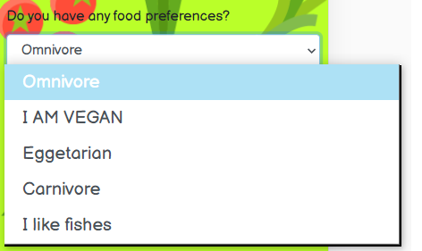
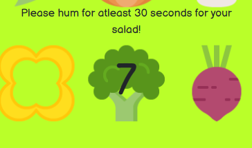
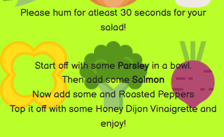

The Brief
For my Human Computer Interaction II course, the design challenge was deliberately unconventional: create a unique interaction using sound as input — without the use of words. No speech recognition. No commands. Just raw, human sound as a design material.
The constraint was the canvas. I explored several directions — a cat game operated by meows, a rhythm-based cricket game — before landing on the idea that felt most genuinely surprising and human: a salad bar that listens to you hum.
The Concept
The Humming Salad Bar is a mobile web app where users hum a tune into their microphone. Based on the characteristics of the hum — pitch, duration, pattern — the app generates a personalized salad bowl recipe. Users first set their dietary preferences, then hum away.
The delight is in the absurdity: the same song hummed at different pitches produces wildly different salads. It rewards curiosity and repeat interaction in a way that purely visual interfaces rarely do.
Sketches




Final Design
I chose a light green palette and hand-drawn Illustrator assets to signal playfulness immediately. The visual identity told users before they read a word: this is fun, this is weird, and that's the point.




Lessons Learned
The biggest tension in this project was between randomness and meaning. Too much randomness and the app felt like a novelty with no reason to return. Too little, and the connection between humming and salad felt arbitrary. I learned that even in playful, experimental UX, users need to feel like their input matters — that they have some legible agency over the outcome.
I also learned to embrace constraints as a creative force. The "no words" rule pushed me into territory I wouldn't have explored otherwise, and the result was far more interesting than a conventional recipe generator would have been.